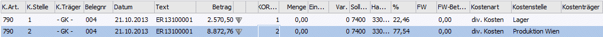

Aus der WinLine FIBU können im Zuge des Buchens Aufwände in Kosten transformiert werden. Üblicherweise ist das die häufigste Form der Kostenerfassung. Es werden folgende Daten übergeben:
Die Zusatzdatenfelder der Kostenrechnung können nur dann bearbeitet werden, wenn in einem der bebuchten Konten im Stammsatz eine Kostenart eingetragen ist. Die Daten werden beim Absetzen der Buchung sofort in die WinLine KORE übergeben und gebucht.
Die Datenfelder für die Erfassung der Kostenrechnungsinformationen sind fix vorgegeben (siehe Beschreibung unten), können aber in der Reihenfolge beliebig angeordnet werden.

Tabellensymbole
Ø
Das Symbol zeigt an, ob eine Aufteilung des Betrages auf mehrere oder andere Perioden vorgenommen wurde.
Ø
Durch Anklicken dieses Buttons bzw. durch Drücken der "Pfeil nach unten"-Taste wird, sofern der KORE-Betrag nicht zur Gänze aufgeteilt wurde, eine neue KORE-Zeile erstellt, die die gleichen Werte (bis auf den Betrag) enthält wie die Zeile von der aus der Button betätigt wurde sowie als Vorschlag den noch aufzuteilenden Restbetrag.
Tabellenfelder
Ø Kostenart
Eingabe der Kostenart, max. 20stellig, alphanumerisch. Die Kostenart, die bei dem angesprochenen Sachkonto hinterlegt wurde, wird vorgeschlagen und kann ggf. editiert werden. Wird eine Einzelkostenart angewählt, kann auch ein Kostenträger angesprochen werden. Bei Eingabe einer Gemeinkostenart bleibt das Aufteilungsfeld KTr/Proj. für die Aufteilung gesperrt.
Ø KSt.
Eingabe der Kostenstellennummer, der der Betrag zugeordnet werden soll.
Ø KTr.
Eingabe der Kostenträgernummer (Achtung: nur bei Einzelkosten möglich). Wurde eine Gemeinkostenart angesprochen, wird im Feld "Kostenträger" der Platzhalter "GK" (für "Gemeinkosten") angezeigt.
Ø Belegnummer
Belegnummer, max. 20stellig, alphanumerisch. Die Belegnummer wird aus der zuvor erfassten Buchungszeile vorgeschlagen und kann ggf. editiert werden.
Ø Datum
Eingabe des Buchungsdatums, wird aus der Buchungszeile übernommen.
Ø Text
Buchungstext, max. 50stellig, alphanumerisch, wird ebenfalls aus der Buchungszeile übernommen.
Ø Betrag
Wenn im Feld % ein Prozentsatz eingegeben wurde, füllt das Programm das Betragsfeld automatisch mit dem errechneten Wert aus. Dieser Betrag kann auch manuell eingegeben werden. Durch Drücken der F3-Taste wird der noch nicht aufgeteilte Betrag automatisch übernommen.
Ø Menge
Eingabe der Anzahl der in der Kostenart hinterlegten Mengeneinheit (ist keine Einheit hinterlegt, kann hier auch keine Anzahl eingetragen werden).
Ø Einheit
Anzeige der im Kostenartenstamm hinterlegten Einheit (Stunden, Kilometer, etc.).
Ø Var.
Der Variator, der in der Kostenart für diese Kostenstellengruppe hinterlegt worden ist, wird automatisch aufgrund der aktuellen Kostenart (und Kostenstellengruppe) vorgeschlagen, kann aber manuell übersteuert werden, sofern es sich bei der Kostenart um eine Gemeinkostenart handelt. Bei Einzelkostenarten ist der Variator immer fix = 10 (d.h. 100% der Kosten sind variabel).
In der Tabelle können dann beliebig viele Kostenerfassungszeilen eingegeben werden, wobei der Buchungsbetrag zur Gänze aufgeteilt werden muss. Vorher kann die Aufteilungstabelle nicht verlassen werden (da sonst Differenzen zw. Finanzbuchhaltung und Kostenrechnung entstehen würden).
Ø Sollkonto
Hier wird das Sollkonto aus der korrespondierenden Sachbuchungszeile angezeigt.
Ø Habenkonto
Hier wird das Habenkonto aus der korrespondierenden Sachbuchungszeile angezeigt.
Ø %
Geben Sie ein, welcher Prozent-Anteil des im Feld Betrag eingetragenen Gesamtbetrages dieser Kostenstelle (diesem Kostenträger) zugeordnet werden soll. Das Feld kann auch einfach (mit ENTER) übergangen werden, wenn Sie den Teilbetrag direkt im Betragsfeld eingegeben haben.
Solange der Gesamtbetrag nicht zur Gänze aufgeteilt ist, kann die Aufteilung nicht verlassen werden (Meldung: Der Buchungsbetrag wurde nicht zur Gänze aufgeteilt). Im Feld Restbetrag wird der noch aufzuteilende Wert angezeigt.
Wenn Splitbuchungen mit Kostenaufteilung erfasst werden, werden die bereits gebuchten Werte mitangezeigt.
Informationsfelder
Ø FW
Wurde die Buchung in einer Fremdwährung erfasst, wird hier der verwendete Fremdwährungscode angezeigt. Dieser kann nicht verändert werden.
Ø FW-Betrag
Der Netto-Fremdwährungsbetrag wird angezeigt.
Ø Kostenart
Bezeichnung der Kostenart, die gerade bearbeitet wird.
Ø Kostenstelle
Bezeichnung der Kostenstelle, die gerade bearbeitet wird.
Ø Kostenträger
Bezeichnung des Kostenträgers, der gerade bearbeitet wird.
Hinweis
Sollen die Bezeichnungen direkt neben den Kostenstellen-, Kostenarten- und Kostenträgernummern angezeigt werden, schieben Sie die Spaltenüberschriften einfach an die gewünschten Positionen (Drag & Drop) und speichern Sie die Tabelleneinstellungen über die rechte Maustaste.
Wurde der KORE-Betrag zur Gänze aufgeteilt, kann die KORE-Erfassung durch Drücken der Pfeil-nach-Unten-Taste verlassen werden.